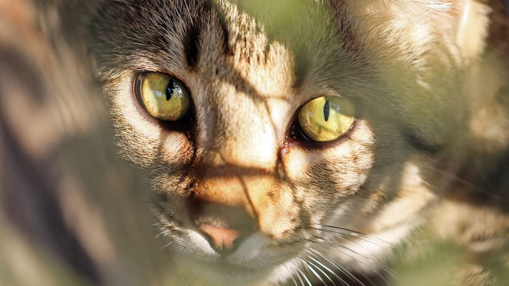

With your dog in a standing position, hold a tasty treat near their nose. Keeping the treat near your dog's nose, move your hand in an arc over his head. As the dog raises his head to follow the treat, his bottom will go on the floor. The instant he sits, praise him and give him the treat.

Day 1: Decide on, locate, and purchase several cat scratching posts and some interactive cat toys. This is a critical step in the process. It is essential that you choose the right kind of post because providing your cat with a scratching surface that she doesn't like isn't going to work. Make sure that you choose a post that is strong, sturdy, tall, and covered in a material that cats love to scratch. Learn more about choosing a great cat scratching post in this article:
Day 2: Place the cat scratching posts strategically around your home. Choose places that your cat already likes to hang out, such as near windows and in the family room with you. Cats also love to stretch and scratch when they first wake up from a catnap, so placing a post near her regular sleeping area is a good idea. Cats scratch partly to mark territory, so don't tuck the post away in an unused corner. Place it front-and-center so she can show off. It's also important to place a post in front of the area of the couch that your cat is scratching. When you see your cat investigating the new posts, give her quiet praise and a cat treat if she likes them.
